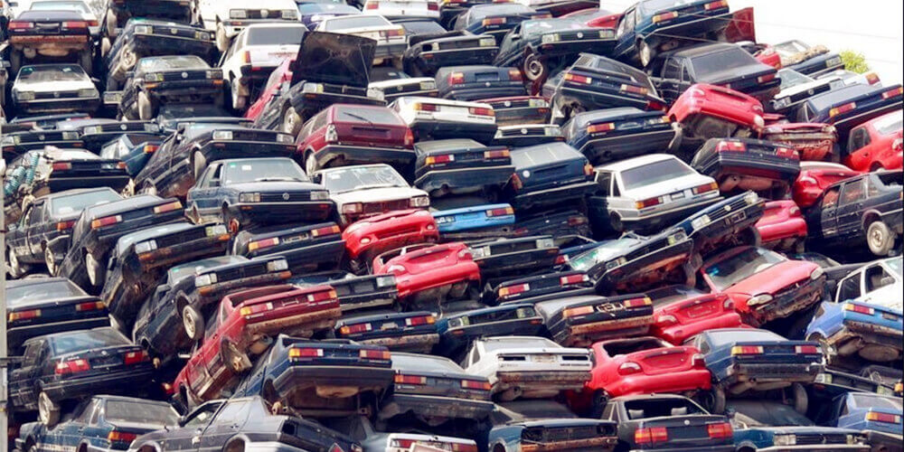

Regardless of whether you intend to eliminate your old automobile, wish to throw out a mishap car and truck, or can no more use old equipment from the industry. Break out vehicle disposal Perth with auto elimination Perth company. In some nations like Austria, you still have to pay horrible costs to remove your old cars and truck or your old machine or your old moped. Not with us: Here, you can obtain good cash for your old vehicles, despite whether you intend to market an ancient vehicle or eliminate a newer one. With us, you will locate an interested customer for your old cars.
We are a solution company that focuses on the acquisition of scrap automobiles. We at Car Elimination Perth are extremely curious about steels of all kinds and remove, as an example, the useful copper for reusing functions or copper export. Old engines can likewise be a helpful raw material for us. So before you park your old automobile somewhere, please bring it to us, we pay a reasonable rate for our customer's lorries.
Many vehicles that are still in excellent problem can be conveniently recycled and then replaced for export to other countries. We also deal with older, dinged up cars in a scrap automobile purchase, i.e., all useful parts are thoroughly drawn out and marketed as used components. By doing this, you make money with scrap cars and trucks, and also we can resell your utilized spares and parts to various other automobile proprietors at a reasonable cost.

If you would like to market your old cars with us, you can be sure to find an experienced scrap car customer at any time that will undoubtedly help you with words and also deeds. We will certainly be happy to encourage you about your choices. After an examination, we can have us pick up your old car, vintage car, or perhaps merely the bodywork or your old industrial equipment directly from you; this conserves money and time. You do not have to rent a trailer and a crane to bring us your goods. We will happily take care of that for you. Please take advantage of our deal and cash in heavily on our scrap cars and truck acquisition, which would certainly or else have landed in the trash. We have fair usage for your lorries.
You might ask yourself why a company like ours pays significant cash of what you might call ineffective scrap? Well, we are not entirely selfless. We can use lots of extra components virtually as well as resell iron. The irony is after that melted down and reused for brand-new automobiles or industrial makers as well as devices. That s why we are also generous when it pertains to purchasing a scrap vehicle. The more we can approve, the extra we can reuse, and again, the more we can pay our consumers. This is an uncomplicated mathematical cost-benefit estimation. All devices and unusable and non-recyclable parts of the vehicles are skillfully rid of by us in an eco mindful, eco-friendly, and even environmental way. Not a decline of electric motor oil will undoubtedly seep into the ground throughout our disposal. This is what we represent with our name.
We buy from exclusive people, firms (company cars that are retired from dealt with possessions due to their useful life), old vehicles, financial institution leasing cars, as well as crash vehicles.